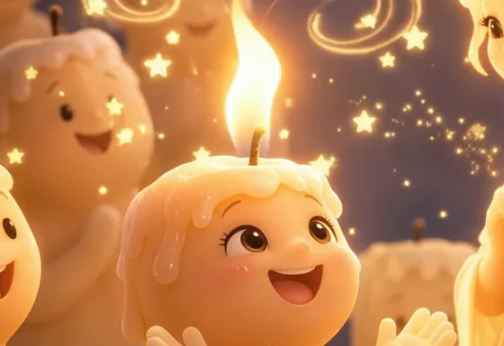
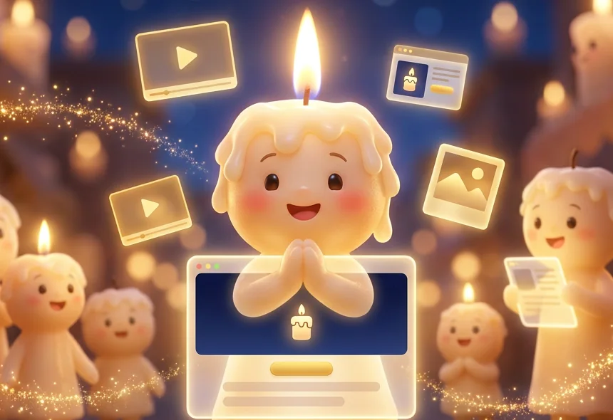
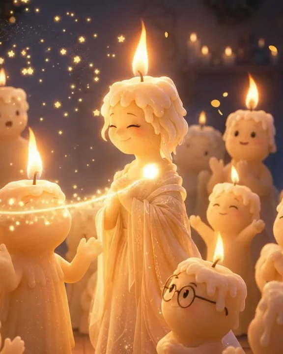

宇宙媽媽賞｜輕贏實驗室
我來，
我來，
是陪妳找回真實的自己。
五十歲之前，我把人生花在成全別人。五十歲之後，我想開始學著成就自己 —— 也陪其他人這樣做。
我走過跨國生活、婚姻、母職、離婚與重新進入職場。那段最迷惘的日子讓我發現一件事：很多人已經很努力了，只是太久沒有真正回頭看自己。
所以我做的事情，是在某個混亂的時刻，陪一個人把自己重新看清楚；人生怎麼走，由那個人自己決定。
陪妳把人生
重新活回來。
有時候，我們只是
太久沒有回來自己身上。
- 見自己
- 抱自己
- 謝自己
- 愛自己
- 給自己
三個原則
輕贏・走出趣・伯樂
-

輕贏
輕盈的狀態，加上比昨天的自己更進步。跟昨天的自己比，標準由自己定。
-

走出趣
先幫自己走出去，走出去之後就能幫助別人。
-
伯樂
先當自己的伯樂，然後成為別人的伯樂。
這個網站有什麼
這裡有我的故事，也有我的方法、服務與案例，整理在同一個地方 —— 我自己看得懂，別人也看得懂。
核心方法
人生，是用來被看懂的
很多人只是還沒看懂自己、還沒看懂情緒、還沒看懂為什麼會痛、還沒看懂自己真正想去的地方。當一個人開始看懂自己，人生就會開始轉動。
所以我不追求瞬間改變人生。我相信熱情是一點一點重新點燃的 —— 一次一次對話、一次一次覺察、一次一次修正方向。
簡單
自然
勇敢
真心・開心・玩心
自信・自在・自由
輕贏實驗室怎麼運轉
實驗室是一個會自己長大的循環。每一次真實的陪伴都會變成案例，案例變成內容，內容再帶來下一個人。
- 我的人生經驗
- 方法與理念
- 輕贏實驗室
- 實際幫助一個人
- 形成案例
- 案例變成內容
- 內容建立信任
- 新的合作對象
- 回到實驗室
